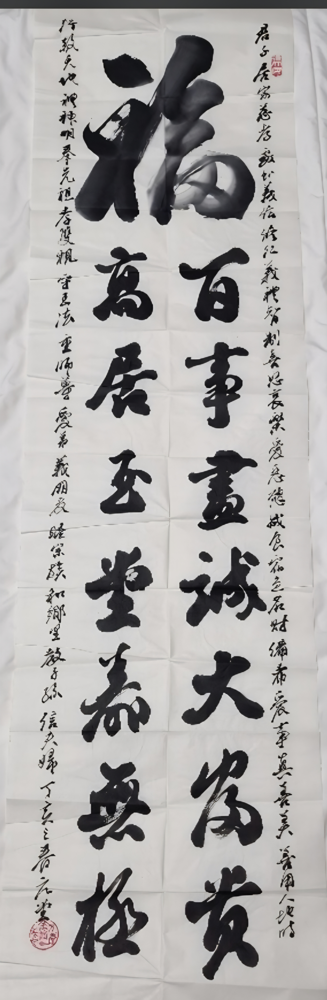

작품 상세 정보
분류: 전통 서예 작품 (작품 08)
상단 대자 및 본문: 福 (복) · 百事盡誠 大富發貴 (백사진성 대부발귀)
형식: 전통 서예 작품 (양쪽 협서 및 낙관 포함)
작가: 원당 김제운
해설 및 의미
1. 상단 글자 (대자 및 중심부)
• 최상단 글자: 「福 (복)」 자가 크고 힘차게 적혀 있습니다.
• 본문 글자 (우측에서 좌측으로 이어지는 10글자): 百事盡誠 大富發貴 (백사진성 대부발귀)
의미: "모든 일에 지극히 정성을 다하면, 크게 부유해지고 귀하게 된다"는 뜻으로, 매사에 성실하게 임하면 큰 복과 부귀가 따른다는 가르침을 담고 있습니다.
2. 양쪽 협서 (작은 글씨 내용)
우측 줄: ...百事... 德... (백사... 덕...)
우측 상단에는 붉은색 낙관(인장)이 찍혀 있으며, 백사와 덕을 강조하는 등의 내용이 이어집니다.
왼쪽 줄: ...丁亥... 元堂書 (...정해... 원당서)
좌측 세로줄에는 작성된 시기인 '정해(丁亥)'년 등의 연대 표기와 함께 작가의 호 또는 서당 이름인 '원당(元堂)' 등의 서명이 적혀 있으며, 하단에 작가의 붉은색 낙관이 선명하게 찍혀 있습니다.
요약 및 감상
커다란 '福(복)'자와 함께 "모든 일에 정성을 다하면 부귀를 누리게 된다"는 백사진성 대부발귀(百事盡誠 大富發貴)의 구절을 담아, 성실함과 정성으로 복된 삶을 이루기를 기원하는 의미를 지닌 서예 작품입니다.